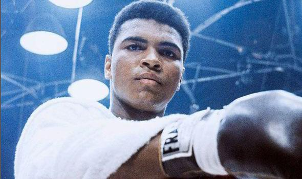

Mohammad Ali was the greatest boxer of all time
Early Years
Muhammad Ali was an American heavyweight boxing champion and Olympic boxing gold medalist from Louisville, Kentucky.
Born Cassius Marcellus Clay Jr. on January 17, 1942, Cassius became a boxer at the age of 12 after his bicycle was stolen. He won his first boxing match six weeks later.
By age 18, Cassius had won two Golden Gloves titles, two national championships and had already accumulated 100 victories with just 8 losses.
Professional Career
In 1960, Clay traveled to Rome, Italy and won the light heavyweight boxing gold medal. After returning to America, he turned pro. He went on to win his first 19 fights
before facing Sonny Liston for the heavyweight championship on February 24, 1964. After Liston failed to answer the bell in the seventh round, Ali became the
heavyweight champion of the world. After the fight, he roared, "I am the greatest!" Shortly after, he converted to Islam and changed his name to Muhammad Ali.
Conversion to Islam and Boxing Suspension
Ali went on to defend his heavyweight title nine times. Then, after being inducted into the armed services for the Vietnam War, he showed up for induction but refused to serve, citing religious beliefs.
He was arrested, and his boxing license was immediately suspended by the New York State Athletic Commission and his heavyweight belt was revoked. Later, he was convicted of draft evasion, and sentenced to
five years in prison and a $10,000 fine. At first Ali was hated as a draft dodger. But as the public attitudes turned against the was, his support actually grew. In 1970 the New York State Supreme Court
ordered his boxing license reinstated and unanimously overturned his conviction.
Return to the Ring
Returning to the ring after 43 months in exile, Ali won his first bout before facing Joe Frazier on March 8, 1971 for the "Fight of the Century." Ali would go on to lose, suffering his first defeat as a pro.
He then went on to win 11 of his next 13 fights, including defeating Joe Frazier in a non-title rematch. On October 30, 1974, he faced George Foreman in Kinshasa, Zaire for the "Rumble in the Jungle." By employing
the "rope-a-dope" strategy, where he leaned on the ropes absorbing blows to tire the stronger Foreman out, Ali won in an eigth-round knockout to regain his title that had been stripped seven years before. This time,
Ali went on to defend his title 10 times.
Late Career and Legacy
On February 15, 1978, Ali lost his title to Leon Spinks in a 15 round decision. Though he later regained the title from Spinks seven months later in a unanimous decision, the aging Ali would go on to lose his next two fights before retiring.
He retired with a career record of 56 wins, five losses, and 37 knockouts. In 1984, Ali was diagnosed with Parkinson's syndrome, but remained in the public spotlight. He was known internationally and was active in humanitarian and charity causes.
In 1990, he met with Saddam Hussein to negotiate the release of American Hostages and in 2002 traveled to Afghanistan as a United Nations Messenger of Peace. In 1999, Ali was named BBC's "Sporting Personality of the Century" and Sports Illustrated's "Sportsman of the Century"
In 2005, he was awarded the Presidential Medal of Freedom. Muhammad Ali died on June 3, 2016 at the age of 74.